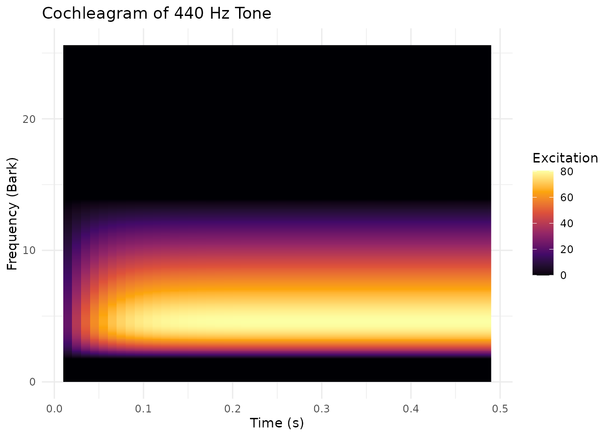

Auditory Modeling with Cochleagram and Excitation
Source:vignettes/auditory-modeling.Rmd
auditory-modeling.RmdIntroduction
pladdrr provides auditory modeling through the Cochleagram and Excitation objects. These model how the human auditory system processes acoustic information, as opposed to a purely physical (spectral) analysis.
Key Concepts
- Cochleagram: Models the basilar membrane response in the cochlea using the Bark scale (0-25.6 Bark ≈ 0-20,000 Hz)
- Excitation: Represents auditory nerve firing patterns on the ERB (Equivalent Rectangular Bandwidth) scale
- Loudness: Perceptual loudness measured in sones (not physical intensity)
- Perceptual Distance: Quantifies how different two sounds “sound” to human listeners
Cochleagram Analysis
Creating a Cochleagram
The cochleagram represents sound on a frequency scale that matches the human cochlea’s tonotopic organization.
# Load or create a sound
sound <- Sound$create_tone(frequency = 440, duration = 0.5, sampling_rate = 44100)
# Create cochleagram
cochlea <- sound$to_cochleagram(
dt = 0.01, # Time step (10 ms)
df = 0.1, # Frequency step in Bark
window_length = 0.025, # Analysis window (25 ms)
forward_masking_time = 0.03 # Temporal masking (30 ms)
)Understanding the Bark Scale
The Bark scale is a perceptual frequency scale where: - 1 Bark ≈ 1 critical band (frequency resolution of human hearing) - 0 Bark = 0 Hz - 13 Bark ≈ 1500 Hz (center of speech range) - 25.6 Bark ≈ 20,000 Hz
# Common frequency conversions
# F1 (250 Hz) ≈ 2.5 Bark
# F2 (2000 Hz) ≈ 15 Bark
# F3 (3000 Hz) ≈ 19 BarkVisualizing Cochleagrams
# Export to matrix for plotting
cochlea_matrix <- as.matrix(cochlea$as_matrix())
# Convert to long format for ggplot2 (rows = frequency bands, columns = time frames)
times <- sapply(seq_len(cochlea$get_number_of_frames()), cochlea$get_time_from_column)
barks <- sapply(seq_len(cochlea$get_number_of_frequency_bands()), cochlea$get_frequency_from_row)
df_long <- expand.grid(Bark = barks, Time = times)
df_long$Excitation <- as.vector(cochlea_matrix)
# Plot
ggplot(df_long, aes(x = Time, y = Bark, fill = Excitation)) +
geom_raster() +
scale_fill_viridis_c(option = "inferno") +
labs(
title = "Cochleagram of 440 Hz Tone",
x = "Time (s)",
y = "Frequency (Bark)",
fill = "Excitation"
) +
theme_minimal()
Advanced: Ear-Drum-Brain Model
For more realistic auditory modeling, use the EDB (Ear-Drum-Brain) method which includes synaptic processing:
cochlea_edb <- sound$to_cochleagram_edb(
dtime = 0.01,
dfreq = 0.1,
has_synapse = TRUE, # Include synaptic adaptation
replenishment_rate = 0.01, # Neurotransmitter replenishment
loss_rate = 0.1, # Synaptic depletion
return_rate = 0.05, # Recovery rate
reprocessing_rate = 0.01 # Reprocessing rate
)The EDB model is more computationally intensive but provides: - Synaptic adaptation (important for continuous sounds) - More realistic temporal response - Better modeling of masking effects
Excitation Patterns
Creating Excitation from Spectrum
Excitation patterns represent the instantaneous firing rate of auditory nerve fibers:
Creating Excitation from Cochleagram
You can also extract excitation patterns at specific times from a cochleagram:
Perceptual Distance
Quantify how different two sounds are perceptually:
# Create two different sounds
sound1 <- Sound$create_tone(frequency = 440, duration = 0.2, sampling_rate = 22050)
sound2 <- Sound$create_tone(frequency = 550, duration = 0.2, sampling_rate = 22050)
# Get excitation patterns
exc1 <- sound1$to_spectrum()$to_excitation()
exc2 <- sound2$to_spectrum()$to_excitation()
# Calculate perceptual distance
distance <- exc1$get_distance(exc2)
print(paste("Perceptual distance:", round(distance, 4)))
#> [1] "Perceptual distance: 6.3688"Higher distance values indicate sounds that are more perceptually different.
Clinical Applications
Hearing Loss Simulation
Compare cochleagrams of normal and impaired hearing:
# Original speech sound
sound_original <- Sound$new(system.file("extdata", "test.wav", package = "pladdrr"))
# In practice, apply a low-pass filter to sound_filtered here to simulate
# high-frequency hearing loss (Sound objects have no clone() method, so
# start from a fresh load rather than copying sound_original)
sound_filtered <- Sound$new(system.file("extdata", "test.wav", package = "pladdrr"))
# Create cochleagrams
cochlea_normal <- sound_original$to_cochleagram()
cochlea_impaired <- sound_filtered$to_cochleagram()
# Calculate perceptual difference
difference <- cochlea_normal$get_difference(
cochlea_impaired,
tmin = 0,
tmax = 0 # Full duration
)
print(paste("Hearing loss impact (distance):", round(difference, 4)))
#> [1] "Hearing loss impact (distance): 0"Without an actual filtering step, sound_original and
sound_filtered are identical here, so
difference is 0; apply a real low-pass filter to
sound_filtered to get a non-zero result.
Speech Intelligibility Prediction
Excitation patterns can predict speech intelligibility. This requires
two recordings of the same material (clean and noisy); the pattern below
uses the bundled test file for both, so distance will be
0.
# Clean speech
speech_clean <- Sound$new(system.file("extdata", "test.wav", package = "pladdrr"))
# Noisy speech (in practice, a separate recording made in noise)
speech_noisy <- Sound$new(system.file("extdata", "test.wav", package = "pladdrr"))
# Get excitation patterns
exc_clean <- speech_clean$to_spectrum()$to_excitation()
exc_noisy <- speech_noisy$to_spectrum()$to_excitation()
# Perceptual distance correlates with intelligibility loss
distance <- exc_clean$get_distance(exc_noisy)
# Lower distance = better preserved intelligibility
distance
#> [1] 0Loudness Recruitment Assessment
Track loudness perception across intensity levels:
# Create sounds at different relative levels by scaling tone amplitude
intensities <- seq(40, 80, by = 10) # relative dB SPL
loudnesses <- numeric(length(intensities))
for (i in seq_along(intensities)) {
# Approximate a level in dB by scaling amplitude (20*log10(amplitude))
amplitude <- min(0.99, 10 ^ ((intensities[i] - 80) / 20))
sound <- Sound$create_tone(frequency = 1000, duration = 0.3,
amplitude = amplitude, sampling_rate = 44100)
# Measure perceptual loudness
excitation <- sound$to_spectrum()$to_excitation()
loudnesses[i] <- excitation$get_loudness()
}
# Plot loudness growth function
plot(intensities, loudnesses,
xlab = "Intensity (dB SPL)",
ylab = "Loudness (sones)",
main = "Loudness Growth Function",
type = "b")Formant Extraction from Excitation
Excitation patterns provide an alternative method for formant extraction:
# Create vowel sound
sound_vowel <- Sound$create_tone(duration = 0.2, sampling_rate = 22050)
# Get excitation pattern
excitation <- sound_vowel$to_spectrum()$to_excitation()
# Extract formants from excitation pattern
formant <- excitation$to_formant(max_formants = 5)
# Query formants
f1 <- formant$get_value_at_time(1, 0.1, unit = "hertz")
f2 <- formant$get_value_at_time(2, 0.1, unit = "hertz")
if (!is.na(f1) && !is.na(f2)) {
print(paste("F1:", round(f1), "Hz"))
print(paste("F2:", round(f2), "Hz"))
}This method can be more robust than LPC for: - Noisy speech - Breathy voice quality - Non-modal phonation
Best Practices
Choosing Parameters
Cochleagram time step (dt): - Speech analysis: 0.005-0.010 s (5-10 ms) - Music: 0.010-0.020 s - Sustained sounds: 0.020-0.050 s
Frequency step (df): - Detailed analysis: 0.05-0.1 Bark - Standard analysis: 0.1-0.2 Bark - Coarse analysis: 0.2-0.5 Bark
Window length: - Shorter (0.005-0.010 s): Better time resolution - Medium (0.020-0.030 s): Balanced - Longer (0.050-0.100 s): Better frequency resolution
Forward masking: - Standard: 0.03 s - Strong masking: 0.05-0.1 s - Minimal masking: 0.01-0.02 s
Performance Considerations
# For batch processing, reuse objects when possible
sounds <- list(sound1, sound2, sound_vowel)
# Vectorized approach: build the cochleagrams once, then query all of them
cochleagrams <- lapply(sounds, function(s) {
s$to_cochleagram(dt = 0.01, df = 0.1)
})
# Extract loudness from all
loudnesses <- sapply(cochleagrams, function(c) {
c$get_loudness_at_time(0.1)
})Memory Management
Cochleagrams and excitation patterns can be large. Clean up when done:
# Process and extract only what you need
cochlea <- sound$to_cochleagram()
loudness_time_series <- sapply(seq(0, 0.5, by = 0.01), function(t) {
cochlea$get_loudness_at_time(t)
})
# Remove large object if no longer needed
rm(cochlea)
gc() # Force garbage collection
#> used (Mb) gc trigger (Mb) max used (Mb)
#> Ncells 1923718 102.8 3264162 174.4 3264162 174.4
#> Vcells 3264199 25.0 8388608 64.0 7489313 57.2Comparison with Traditional Analysis
| Traditional | Auditory Modeling |
|---|---|
| Spectrogram (linear/log Hz) | Cochleagram (Bark scale) |
| Spectrum power (dB) | Excitation (nerve firing rate) |
| Sound level (dB SPL) | Loudness (sones) |
| Spectral distance (Euclidean) | Perceptual distance |
Auditory modeling is preferred when: - Modeling human perception - Clinical audiology applications - Speech intelligibility prediction - Psychoacoustic research - Hearing aid algorithm development
Further Reading
- Bark scale: Zwicker & Terhardt (1980)
- ERB scale: Glasberg & Moore (1990)
- Cochleagram: Patterson et al. (1992)
- Excitation patterns: Moore (2012) - An Introduction to the Psychology of Hearing
Session Info
sessionInfo()
#> R version 4.6.1 (2026-06-24)
#> Platform: x86_64-pc-linux-gnu
#> Running under: Ubuntu 24.04.4 LTS
#>
#> Matrix products: default
#> BLAS: /usr/lib/x86_64-linux-gnu/openblas-pthread/libblas.so.3
#> LAPACK: /usr/lib/x86_64-linux-gnu/openblas-pthread/libopenblasp-r0.3.26.so; LAPACK version 3.12.0
#>
#> locale:
#> [1] LC_CTYPE=C.UTF-8 LC_NUMERIC=C LC_TIME=C.UTF-8
#> [4] LC_COLLATE=C.UTF-8 LC_MONETARY=C.UTF-8 LC_MESSAGES=C.UTF-8
#> [7] LC_PAPER=C.UTF-8 LC_NAME=C LC_ADDRESS=C
#> [10] LC_TELEPHONE=C LC_MEASUREMENT=C.UTF-8 LC_IDENTIFICATION=C
#>
#> time zone: UTC
#> tzcode source: system (glibc)
#>
#> attached base packages:
#> [1] stats graphics grDevices utils datasets methods base
#>
#> other attached packages:
#> [1] ggplot2_4.0.3 pladdrr_5.0.3
#>
#> loaded via a namespace (and not attached):
#> [1] gtable_0.3.6 jsonlite_2.0.0 dplyr_1.2.1 compiler_4.6.1
#> [5] tidyselect_1.2.1 Rcpp_1.1.2 jquerylib_0.1.4 systemfonts_1.3.2
#> [9] scales_1.4.0 textshaping_1.0.5 yaml_2.3.12 fastmap_1.2.0
#> [13] R6_2.6.1 labeling_0.4.3 generics_0.1.4 knitr_1.51
#> [17] tibble_3.3.1 desc_1.4.3 bslib_0.12.0 pillar_1.11.1
#> [21] RColorBrewer_1.1-3 rlang_1.3.0 cachem_1.1.0 xfun_0.60
#> [25] fs_2.1.0 sass_0.4.10 S7_0.2.2 otel_0.2.0
#> [29] viridisLite_0.4.3 cli_3.6.6 pkgdown_2.2.1 withr_3.0.3
#> [33] magrittr_2.0.5 digest_0.6.39 grid_4.6.1 lifecycle_1.0.5
#> [37] vctrs_0.7.3 evaluate_1.0.5 glue_1.8.1 data.table_1.18.4
#> [41] farver_2.1.2 codetools_0.2-20 ragg_1.5.2 rmarkdown_2.31
#> [45] tools_4.6.1 pkgconfig_2.0.3 htmltools_0.5.9